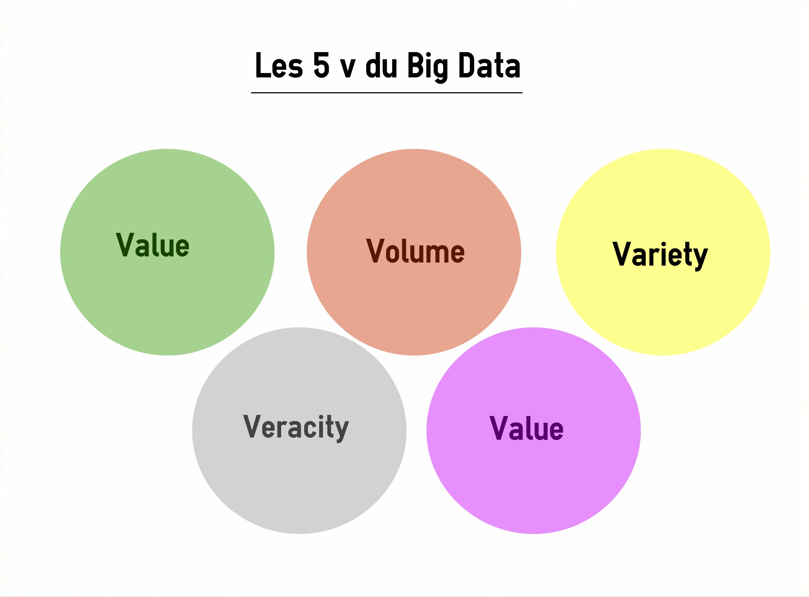

Mais qu'est-ce que le big data ?
Le phénomène du big data est très bien décrit dans la vidéo suivante :
On peut ainsi le décrire par l’ensemble de données à propos d'un individu dont la quantité est si grande que l’analyse est impossible sans outil d‘analyse avancé. Le terme 'Big Data' à été utilisé pour la première fois en 1970 pour désigner les grands ensembles de données. Il est utilisé notemment par les domaines médicaux/marketing/politique/économique et est utilisé pour :
-L’aide à la décision
-La prévision
-La découverte de nouvelles connaissances
La règle des 5V
L’usage du big data est devenue commune de nos jour mais cela peut poser certains problème tels que la protection de la vie privée, de son intimité sur sa personne physique et psychique. Le big data regroupe une famille d’outils qui répondent à une penta problématique, elle est nommée règle des 5V . Il s’agit notamment d’un volume de données considérable à traiter, une grande variété d’informations , et un certain niveau de vélocité à atteindre, autrement dit de fréquence de création, collecte et partage de ces données, et de la variété des informations qui seront des données brutes/semi-structurées et donc non structurées ainsi que la valeur de ces mêmes informations et enfin, la véracité de ces mêmes informations. Si nous nous intéressons de plus près à chaque nous pouvons les décrire plus précisément a l’aide d’un schéma :
Le volume
Le volume correspond à la masse d’informations produite chaque seconde. Selon des études, pour avoir une idée de l’accroissement exponentiel de la masse de données, on considère que 90 % des données ont été engendrées durant les années où l’usage d’internet et des réseaux sociaux a connu une forte croissance. L’ensemble de toutes les données produites depuis le début des temps jusqu’à la fin de l’année 2008, conviendrait maintenant à la masse de celles qui sont générées chaque minute. Dans le monde des affaires, le volume de données collecté chaque jour est d’une importance vitale.
La velocité
La velocité équivaut à la rapidité de l’élaboration et du déploiement des nouvelles données. Par exemple, si on diffuse des messages sur les réseaux sociaux, ils peuvent devenir « viraux » et se répandre en un rien de temps. Il s’agit d’analyser les données au décours de leur lignée (appelé parfois analyse en mémoire) sans qu’il soit indispensable que ces informations soient entreposées dans une base de données.
La variété
Seulement 20% des données sont structurées puis stockées dans des tables de bases de données relationnelles similaire à celles utilisées en gestion comptabilisée. Les 80% qui restent sont non-structurées. Cela peut être des images, des vidéos, des textes, des voix, et bien d’autres encore… La technologie Big Data, permet de faire l’analyse, la comparaison, la reconnaissance, le classement des données de différents types comme des conversations ou messages sur les réseaux sociaux, des photos sur différents sites etc. Ce sont les différents éléments qui constituent la variété offerte par le Big Data.
La véracité
La véracité concerne la fiabilité et la crédibilité des informations collectées. Comme le Big Data permet de collecter un nombre indéfini et plusieurs formes de données, il est difficile de justifier l’authenticité des contenus, si l’on considère les post Twitter avec les abréviations, le langage familier, les hashTag, les coquilles etc. Toutefois, les génies de l’informatique sont en train de développer de nouvelles techniques qui devront permettre de faciliter la gestion de ce type de données notamment par le W3C.
La valeur
La notion de valeur correspond au profit qu’on puisse tirer de l’usage du Big Data. Ce sont généralement les entreprises qui commencent à obtenir des avantages incroyables de leurs Big Data. Selon les gestionnaires et les économistes, les entreprises qui ne s’intéressent pas sérieusement au Big Data risquent d’être pénalisées et écartées. Puisque l’outil existe, ne pas s’en servir conduirait à perdre un privilège concurrentiel.
Concrètement, quel sont les résultats de l'utilisation du big data ?
Le Big Data permet aux commerciaux de créer des offres «taillées» pour leurs clients grace aux statistiques, de surveiller une population,enfin, grâce au Big Data, la campagne d'Obama à récupéré environ 1 milliard de $ grace au ciblage de personnes pour appel aux dons de plus, ca leur a permis de trouver les arguments les + convaincants grâce à des simulations.
Un autre exemple, par exemple dans le marketing web, avec le phénomène d’enchères en temps réels , qui s’appuie sur le data en mouvement pour proposer une publicité spécifique en fonction de l’utilisateur qui se connecte au site. Nous pouvons citer comme exemple l’entreprise Tum qui classe l’utilsateur dans un segment lorsqu’il se connecte au site, en fonction de son historique de navigation et des informations provenant des réseaux sociaux, Avec ces informations la publicité de l’annonceur ayant fait la meilleur enchère est affiché en moins de 10 millisecondes.
Toutefois, cela peut entrainer une favorisation de clients en fonction d'un facteur de risque (calculé a base de données)
L'intérêt grandissant des entreprises vis-a-vis du big data
D’ici quelques années, le marché du big data va se mesurer en centaines de milliards de dollars. C’est une mine d'or pour le business. Selon des études, il s’agit même d’une vague de fond où l’on retrouve la combinaison de la BI (business intelligence), de l’analytics et de l’internet des objets. IDC affirme qu’il devrait passer au-delà des 125 milliards de dollars avant la fin 2015. En effet, plusieurs études affluent sur cette affirmation et toutes confirment que les budgets que les entreprises vont consacrer au Big Data ne vont connaître que des fortes progressions. Ainsi, rien que le marché des solutions visuelles de découvertes des informationsliées à la gestion des données massives va grimper de 2,5 fois plus rapidement que celui des solutions de BI d’ici à 2018. D’après le calcul effectué par le cabinet Vanson Bourne, dans le monde, l’ensemble des dépenses consacrées au Big data, dans les budgets IT des grandes entreprises, devrait représenter un quart du budget total IT en 2018, s’il en est encore à 18% actuellement. Le Cap Gemini a aussi commandité une étude en mars 2015. Le résultat a montré que 61% des entreprises sont conscientes de l’utilité du Big Data en tant que “moteur de croissance à part entière”. De ce fait,on lui accorde beaucoup plus d’importance que leurs produits et services existants. Cette même étude a encore indiqué que 43% d’entre elles se sont déjà réorganisées ou se restructurent présentement pour exploiter le potentiel du Big Data.
De plus, en 2014, 15 milliards d'appareils connectés ont étés comptabilisés et en 2020, sont attendus environ 50 milliards d'appareils connectés
Quel futur pour le big data ?
Etant une tendance lourde, le Big Data n’est pas une mode. Dans le domaine de l’usage, il satisfait une nécessité de travailler la donnée plus profondément, pour créer de la valeur, conjointement à des aptitudes technologiques qui n’existaient pas dans le passé. Cependant, compte tenu de l’évolution des technologies qui ne semble pas vouloir s’estomper, on ne peut pas alors parler d’une norme véritable ou de standards dans le domaine du Big data. Beaucoup d’applications du Big Data n’en sont qu’à leurs préludes et on peut s’attendre à voir apparaître des utilisations auxquelles on ne s’attend pas encore aujourd’hui. En quelque sorte, le Big Data est un tournant pour les organisations au moins aussi important qu’internet en son temps. Chaque entreprise doit donc s’y mettre dès maintenant. Dans le cas contraire, il y a un risque qu’elle se rendent comptent d’ici quelques années qu’elles se sont faites dépasser par la concurrence. Les gouvernements et les organismes publics se penchent également sur la question à travers l’ open data.
Conclusion
Les données émises permettent certes d'optimiser notre quotidien mais bénéficie aux assureurs, banquiers et politiciens, qui réduiront les risques au maximum afin de générer de + importants bénéfices dans un monde qui se tournera peu à peu vers une sélection de privilégiés, dévaluant ainsi l'équité de la population au profit d'une liasse de billets supplémentaire.